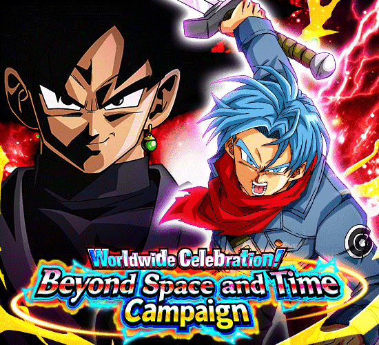
Provavelmente uma das celebrações mais importantes na história do jogo.
Uma celebração extremamente hypada pelo fato de a comunidade estar esperando por uma celebração future saga digna, e ela realmente veio
O potencial pra ezas e etc nessa celebração já era insano, mas uma coisinha q ninguém estava esperando é o anúncio de q o global e o jp finalmente iriam se unir permanentemente depois de 8 anos de jogo, oq deixou todo mundo muito doido.
^ Sumário (clique para ir a qualquer um dos tópicos)
ELE VOLTOU LETS GOOOOOOOOOOOOOOOOOOOOOOOO
Geral comentou se teria um rap esse ano ou se foi algo exclusivo do cooler, e eu agradeço muito por esse não ter sido o caso
Não tem como irmão, o cara fez um rap das fusões potara e ficou genial, além de ter basicamente confirmado que raps com o tema da celebracão vão ser recorrentes e pelo jeito, só vão melhorar
Só queria meter uma experiência própria aqui: assistir o dokkan now do global com as novidades e imediatamente ir pra live do jp pra ver se tinha um rap e realmente ver q tinha foi muito especial
Obrigado ao artista pelo conhecimento desbalanceado e por grudar outra música em japonês na minha mente.
goku e vegeta blue / VEGETTO BLUE
Veja como massacraram meus garotos.
Ficamos 3 anos, mais de 1000 dias sem um novo vegetto no jogo pra ele ser travado por uma active horrível.
Enquanto o zamasu tem todo o ataque do mundo e a defesa braba, esse card tem.. alguma coisa que eles acharam q era bom
Tá, antes que eu comece a dilacerar o card, eu vou falar que a Leader Skill desses cara é muito boa
Categorias boas, e eles vieram com um extra: Eles são líder de 150% pra Super Class inteira.
Então é, a única vantagem deles é você poder tacar 300 personagens quebrados a vontade no time e ainda colocar a Bulma LR também, simplesmente muito forte
Agora sim, posso reclamar do card.
Deixa eu ser bem explicativo, digamos que você está ali no turno 1, contra um inimigo que não é realm of gods e vc coloca seu goku e vegeta novinhos no slot 1
Eles tem 100% de ATK total da passiva inteira.
Tipo, hã?? Como assim????
Temos um LR dokkan fest de 2023 na ferrando celebração de downloads do jogo e é isso q o personagem tem de dano potencial.
"Ah mas eles stackam"
Amigo, entenda, 80 quintilhões x0 continua sendo 0
Não adianta stackar se mesmo stackando vc não vai chegar a nenhum valor bom
Mas tudo bem, já que isso só ocorre com eles no slot 1, onde eles tem mais defesa e 50% de desvio, uau que personagem incrível
Já no slot 2 eles tem mais ATK, só que agora a defesa deles máxima é 150% 🔥🔥
E claro, eles tem uma intro (facilmente a mais feia do jogo, animações no nível da kale) e defesa ativa, ou seja, eles estão perfeitamente bem né?
Bom, boa sorte, pq ela só dura 4 turnos, depois disso vc vai ver a telinha de game over se for contra um boss teq.
Bom, aqui estamos né, vamos falar da active horrível deles
Só cair abaixo de 70% de HP a partir do turno 5..
Pera, mas isso nem é tão ruim assim, turno 5 não é tão tarde na luta e é só dar float neles, certo? ERRADO!
A condição de fusão do Vegetto enganou geral, pois a active não fica disponível no turno 5, e sim no quinto turno desde a primeira aparição deles
Sabe oq isso significa?
Se esses caras vierem no turno 1 pra você, então ok, realmente é no turno 5
Mas se esses caras vierem no turno 3, você só vai ter a fusão possívelmente disponível no turno 7, boa sorte viu 💀👍
Pelo menos a parte de ter menos de 70% de HP é muito fácil já q eles tomam dano para catapimbas sem o desvio carregar eles nas costas.
Sendo honesto, essa é uma das piores condições possíveis, chega a ser ridículo
E aí sim, vem o vegetto.
O Mr. Dokkan Original em pessoa.
Caso vc consiga de algum jeito chegar nas condições vivo e usar a active, vc vai ter um card bom pelo menos
E ele fica de fato bom, é efetivo contra tudo pra sempre e pode lançar até 4 supers se estiver no slot 2, oq ajuda ele a ter uma defesa decente no geral
Um problema desse card é a “mecânica da pan”, onde ele tem 30% de redução de dano, mas só antes de atacar, e ele ganha mais 20% se estiver no slot 1, oq, se vc perceber, significa q ele fica sem nenhuma redução no slot 2 ou 3, oq faz dele bem frágil já q a chance de ele dar tantos supers não é garantida.
Pra ajudar nessa situação ele tem uma active q dá um dano horrível mas q deixa ele com desvio garantido no turno, e tmb permite q vc possa dar 5 supers, q ajuda tmb (vale avisar que se vc ir num evento q nulifica desvio e usar a active, ela conta como um ataque e vc perde 30% de redução de dano 💀)
No geral ele é bom, poderia ser melhor, mas é bom
Mas eu devo falar que 80% das animações desse card (tirando o ultra super attack e as active skills) são horrivelmente feias, e isso é triste.
Mai STR
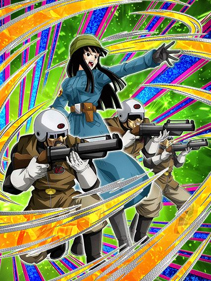
Dê dois supers ou vc morre: o card
Acho q a frase acima resume bem o card, já q a mai se resume a isso
Não é um card de dar dano, ela só é um suporte muito bom de 50% de ATK e DEF e 10% de crítico pra geral mas é só isso.
A mai tem 20% de redução de dano e quando vc der outro super, a redução aumenta pra 50% no turno (oq eu quis dizer é q a redução total ativa sempre q vc der 2 supers, então se em um turno vc der um super apenas e no turno seguinte der outro, a redução ativa nesse turno, e então reseta e começa de novo)
Ela pelo menos tem 30% de chance de dar um super adicional, mas se nem esse ativar, nem o hidden potential, dependendo do boss vc vai de base e acabou.
Eu não diria q é um card ruim, ela é decente, só q dá pra morrer fácil por causa dela infelizmente.
Zamasu Corrompido LR
O melhor extreme do jogo.
Assim como o vegetto, o zamasu tem uma leader skill bem abrangente, pegando praticamente todos os vilões do futuro, fusões e até realm of gods oq é bem doido, além de ter a nova leader skill de 150% pra uma class (no caso dele, extreme)
E honestamente o kit dele é fácil de resumir, ele tem TODO dano e mais doq a defesa necessária
A intro dele é muito linda, curta e fácil de pegar, só precisa de 1 realm of gods q é oq vc quer no time de qualquer jeito, e com ela vc é invencível no turno 1
Depois do turno 1 vc ainda vai ter 60% de redução de dano oq é totalmente balanceado e tomando 6 ataques vc builda 150% de ATK a mais, e sendo essa parede inquebrável, fica fácil demais
E aí pra completar, nem de cópia vc precisa, já q no kit ele tem 50% de crítico e tmb 50% de chance de super adicional, e quanto mais supers, maior a sua defesa, deixando vc ainda mais tank
Ele completa tendo a mesma mecânica do birdku de ganhar defesa a mais quando leva um ataque, só q uma versão buffada onde se vc estiver com menos de 70% de HP vc ganha 100% de DEF a mais pq sim
Em resumo, o zamasu era pra ser um canhão de vidro, só q esqueceram do vidro nele
Primeiro turno ele não leva dano e no próximo ele ainda não leva
E depois segue com 40% de redução de dano pra sempre enquanto dá supers de 15 milhões sem cópias como se fosse normal
Daí vc se pergunta “como se mata esse personagem?”
Acredite, consegue ficar melhor ainda
O Zamasu infelizmente também tem a condição podre de precisar estar abaixo de 70% de HP e estar no seu quinto turno, mas diferente dos blue boys, ele não fica super ultra frágil com o tempo, então mesmo que você não consiga se transformar, não vai ferir tanto o Zamasu como iria ferir os blue boys.
Se você realmente não gosta nem de tomar 2 digitos de dano, pronto, agora vc não toma mais nenhum.
O zamasu literalmente se torna o card q dá dano, já q ele recebe 0 de dano de tudo no jogo enquanto dá supers de 10 milhões em área e linkando perfeitamente com outros Zamasus
Isso enquanto ele se torna orb changer e suporte de 60% de defesa pra worldwide chaos, pra buffar ainda quem precisar
E é claro, ele tem a nova mecânica de domínio onde ele diz “Expansão de Domínio” e domina o universo inteiro
Sendo o primeiro card com a mecânica, o zamasu já tem uma interessante q aumenta o dano recebido pra inimigos E aliados q sejam super class, oq já é interessante e vai servir de base pra domínios muito mais quebrados no futuro.
Enfim, o zamasu é provavelmente o melhor card do jogo se ele receber mais buffs pro time dele, já q ele sozinho realmente leva as próprias palavras a sério, sendo invencível nos primeiros 4 turnos e caso vc precise, usa o domínio e aí não dá mais pra receber dano, muito maneiro.
zamasu phy
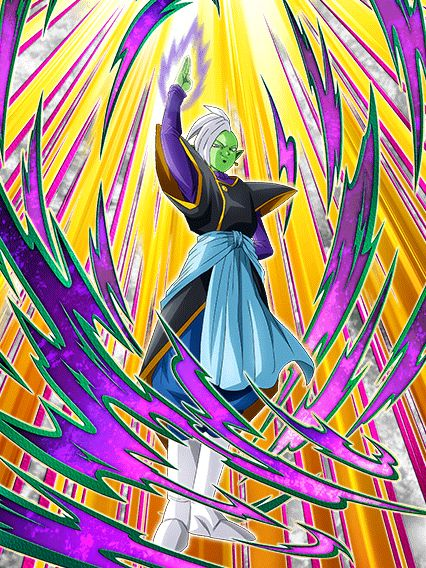
Eu não sei oq eles estavam cozinhando, e honestamente eu tenho medo.
Oq aconteceu com esse card?
O zamasu começa tendo 75% do kit dele só disponível se tiver um inimigo super class, e tem realmente muita coisa
Vendo assim vc pensa "meu Deus, ele é o destruidor de super class, o dilacerador de bosses heróis, o card perfeito pra qualquer evento q tenha um personagem bom de coração", mas não.
O zamasu tem buffs q levam turnos pra ativar, oq significa q mesmo contra um super class ele não vai ter poder total até o turno 5 ou 6
E ele é um suporte brabo ok? 50% de ATK e DEF e 10% de crítico pra geral future saga, ele seria um parceiro incrível pro zamasu lr, e então eles decidiram q não.
O zamasu tem 50% de desvio mas isso tmb é travado pra só quando for inimigo super class, e a defesa dele não é nada boa. Dá pra juntar tudo q ele pode oferecer e então tirar o suporte q vc vai ter um card inútil
Claro, isso tudo q eu considerei é caso vc esteja contra um inimigo super class, pq caso contrário, o zamasu vai ser ainda pior, sem desvio e sem esperança de vitória pro seu time
É triste, pq a celebracão de downloads é a única celebracão do ano q realmente buffa os vilões e então eles metem essa, é deprimente ver q esse card podia ter sido oq o piccolo str foi ano passado
Pelo menos ele tem uma intro com ost muito boa...
Eza do Trunks TEQ
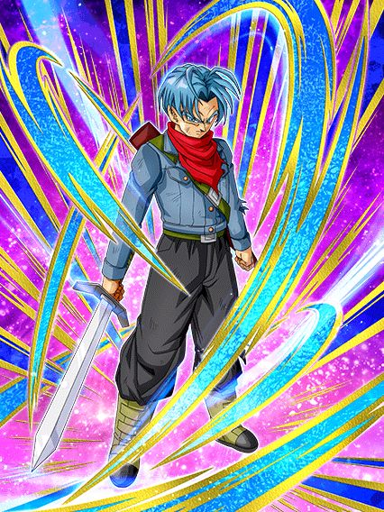
Erros foram cometidos.
O eza desse cara e o zamasu agl eram praticamente confirmados assim q a celebração foi anunciada, o problema é q os dois tiveram uma diferença considerável na execução dos ezas.
Diferente do zamasu, o trunks stacka ATK ao invés de DEF e isso se torna um problema bem rápido, já q apesar de ele ganhar 50% de DEF no turno por super, ele não tem nenhuma mecânica defensiva a mais e eu acho q já fiz alguém se matar de tanto falar q defesa bruta não é mais suficiente hoje em dia
Um fato extra: A build antiga de hidden potential do trunks era full crítico pq ele não stackava na base e não tinha crítico em nada, mas o eza deu pra ele uma chance de crítico muito alta q zuou a build de geral de 2019 💀
Enfim, vc só fica na base por 1 turno (q honestamente é o bastante pra te matar mas ok), e transforma automáticamente no próximo
Stack.
O trunks é bem fácil de resumir: Ele stacka 50% de ATK e DEF a cada super, e isso é o mais importante mesmo
Ok entrando em detalhes, o trunks pode lançar até 3 supers assim q transformar e depois de 1 turno pode lançar até 4 (pq isso? Não sabo), além de ele "buildar" 100% de ATK e DEF ao passar de 4 turnos, e pra finalizar tmb builda um suportezinho de ki pra super class
Bom, acho q já foi notável qual o grande problema do trunks, ele precisa stackar e tem muitas coisas pra buildar q ele não tem como acelerar já q é baseado em turnos, além de ele óbviamente não ganhar nada além de defesa bruta transformado tmb
Sim, ele ganha bastante ATK e ainda crita legal mas precisa de alguns turnos e é claro, um pouquinho de sorte com os adicionais pra chegar em uns 1 milhão de defesa mais rápido (vale lembrar q dependendo do boss, nem isso adianta), mas isso depende totalmente do tempo da luta
Em resumo, se a luta deixar vc buildar, então stacke, se não der tempo, ou vc faz o L (vc tmb pode buildar o trunks com desvio se quiser, alllright guys), ou vc pode usar a active dele e rezar.
Bom agr vc dá dano.
O trunks vira um nuker, oq é interessante considerando q ele stacka bastante antes de transformar
Só tem alguns problemas..
Pra começar, o trunks não tem nenhum ATK ou DEF de base, é só oq vier das orb q vc pegar
E ele muda orbs pra teq, mas o problema é q ele só muda 1 tipo aleatório e isso pode resultar em ele mudar quase nada ou realmente mudar 1 orb, oq obviamente vai te matar por não ter defesa e vc tmb não vai dar dano
Mas assim, caso vc pegue uma quantidade boa de orbs, o trunks vira um monstro em dano e defesa (de novo, só defesa)
Ele tem crítico garantido sempre e ainda ganha 100% de ATK a mais por super no turno, mas ainda assim, não dá cara, infelizmente essa brincadeira dá ruim.
O trunks é muito bom, mas ele morre fácil pras red zones de só 1 ou 2 fases, ele só não consegue tankar as coisas direito e se vc conseguir usar a active dele e ele não mudar orbs do jeito mais maravilhoso perfeito q existe, toda sua partida vai de base
Se tivessem dado defesa ativa pra ele com alguma condição ou não, ele provavelmente seria o melhor TUR com eza do jogo, mas isso seria quebrado até demais já q nós sabemos bem oq acontece com personagens q stackam 50% com defesa ativa (sim gohan teq, é sobre você).
EZA DO ZAMASU AGL
Deixaram eles cozinharem.
Isso sim é o que chamamos de eza, eles realmente trouxeram o zamasu de volta como um deus do melhor jeito possível
Na forma base ele é bem safe, não muito dano, mas stacka defesa e tem 30% de redução de dano, então ele consegue tankar bem até
Por sinal, ele só fica nessa forma por 1 turno, então pegar um adicional logo no começo é muito bom, dá uma diferença legal
Bom, no turno seguinte ele se transforma
Rapaz ele tá com zap
Eles deram stack de ATK e DEF pra esse cara em cima de 50% de redução de dano, literalmente não tem como dar errado
E realmente não teve.
O mano é o melhor parceiro de link do zamasu LR e os 2 juntos formam uma rotação incrivel, já q o LR é um ótimo tank no começo da partida oq ajuda esse a stackar tranquilo e depois da redução do LR dar uma diminuida vc coloca o dokkan fest no slot 1 pra proteger o outro enquanto vc stacka
É interessante colocar ele no slot 1 pq ele dá um super adicional garantido se ele tomar 1 ataque antes de atacar, oq permite ele dar até 3 supers com o hidden potential, e como ele tem uma defesa boa ele vai virar um tank muito rápido
E quando vc finalmente cansar de stackar..
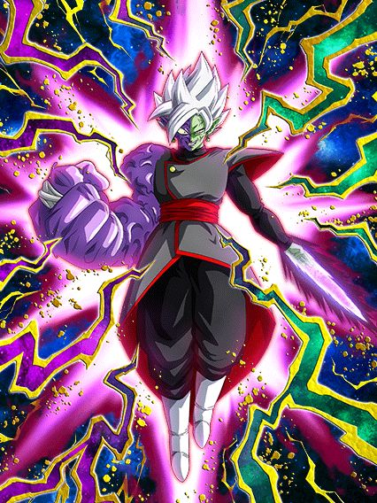
Bom agr vc dá dano.
O zamasu perde 20% da redução de dano mas vira uma máquina de dano enquanto continua linkando 6/7 links com o LR, ou seja, ele destrói tudo
Não só isso mas o momento interessante de transformar esse zamasu é quando vc ativar o domínio do outro, assim, mesmo com a perda da redução de dano ele ganha os 60% de DEF a mais de suporte, q não substitui a redução mas ajuda
E só pra completar, ele agora ganha 50% de crítico e tem a mecânica de lançar um super adicional caso ele ataque 2 vezes, ou seja, se vc der um adicional q nem precisa ser super, ele vai lançar 2 supers de 13 a 14 milhões com 50% de critar e junto com o domínio invencível do outro zamasu, vc tem uma top 5 rotações mais braba.
eza do zamasu e gowasu phy
Eu odeio esse card.
Eu simplesmente desprezo a existência dele, e acho que ele nem deveria existir na real
Tudo isso pq esse é um card com um suporte incrível de 70% de DEF que ajudaria demais o time do zamasu mas o card é travado por 50% de chance de desvio e isso é o bastante pra zuar tudo
Sim eles tem uma defesa minimamente boa, mas eles só vão morrer pra qualquer coisa se não desviarem e adivinha só, eles não vão desviar.
Bom pelo menos o ki e suporte são bons..
EZA da Mai INT
Isso sim é um sub-eza decente.
A mai simplesmente dá 40% de ATK e DEF pra geral time travelers, além de mais 10% caso sejam super class oq ajuda demais
Mas diferente de um certo outro sub-eza, a mai tem 70% de desvio oq já salva ela da maioria dos danos, a única coisa é q ela ganha o desvio só depois de dar super mas n é nada q uma build full desvio não resolva (é o certo pra ela mesmo)
De cereja no bolo ela ainda ganha um pouquinho a mais de defesa e ativa um scouter se vc tiver abaixo de 70% de HP oq é bem tranquilo e obviamente ajuda demais a salvar ela de supers se necessário
No geral um eza muito usável nas red zones e extremamente decente, uma suporte maravilhosa pra future saga.
EZA do Gohan do Futuro INT
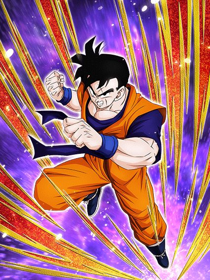
Uhhh 50% de chance de defesa ativa?
Tranquilo, o gohan é um card gente boa.
Ele tem um kit simples na forma base, dano e defesa usáveis, um suporte de 50% de ATK e DEF pra bond of master and disciple, e a chance de 50% de ter defesa ativa se tiver um trunks no time, q apesar de estranha, não é ruim pois ele tem um pedaço específico da passiva q rapaiz..
Basicamente, no momento em q vc cair abaixo de 70% de HP, o gohan ganha 58% de redução de dano, e eu falei "cair" pq por algum motivo essa parte da passiva ativa diferente do comum, onde normalmente algo com restrição de vida ativa quando vc entra no turno
Ao invés disso o gohan ativa a redução de dano no momento q vc cair abaixo dos 70%, mesmo que seja no meio do turno, oq faz dele levemente perigoso mas se vc tomar um super e ficar no limite da vida a redução vai te proteger.
Bom uh, o gohan se transforma em ssj, mas é uma condição meio bizarra onde vc tem q tar acima de 58% de HP, no turno 4 E com um trunks no time, oq é bem estranho mas ok, não é tão horrível como outras..
Personagem moderno mais fraco:
O gohan agora vira uma máquina de dano gente boa, onde a redução de dano dele fica ativa pra sempre oq já ajuda ele demais em qualquer luta, além de ele ter uns valores de ATK e DEF bem altos, q só aumentam mais se tiver outros bond of master and disciple no turno, isso com uma chance de 30% de critar no super
E já q eu falei do super, o gohan agora stacka ATK no super, e com os valores altos q ele tem, o dano já é muito bom mas isso é complementado com um adicional de 50% de ser super caso tenha um trunks no turno e outro super adicional garantido caso o inimigo seja androids ou future saga
Vale lembrar q a chance de crítico dele está no super e não na passiva, ou seja ela ativa várias vezes (no terceiro super vc já tem 90% de chance de critar e caso vc dê um adicional do hidden potential vc crita garantido)
No geral ele é simplesmente um card muito forte na ofensiva e na defensiva tmb, já q quanto mais tempo passar, mais forte ele fica.
EZA do trunks teq 2 a vingança
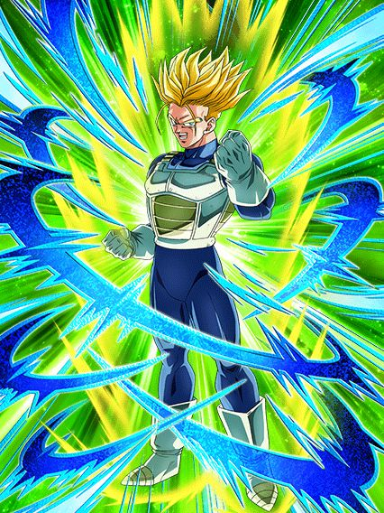
É melhor você estar contra um cell…
Bom o trunks infelizmente não é um eza bom, já que metade do kit dele é travado por aliados e inimigos específicos
Ele tem 150% de ATK E DEF e uma buildagem rápida de 50% de ATK, DEF e chance de crítico com 2 ataques só, mas se vc estiver contra um boss normal, é só isso q vc tem de passiva.
O trunks ganha mais ki e 100% de ATK e DEF se tiver um gohan do futuro no time, oq é decente já q ele é o banner unit do gohan, mas é difícil manter esse trunks seguro numa red zone
Ele ganha 6 de ki e dá crítico garantido contra um inimigo q seja androids ou future saga, e tem mais 100% de ATK se o inimigo for o cell
Acho q eu nem preciso aprofundar demais no pensamento pra entender que esse card não tem desvio ou defesa ativa ou algo q ajude ele, ele só tem dano e isso contra 1 inimigo em específico, bem triste.
Trunks LR meio fraude
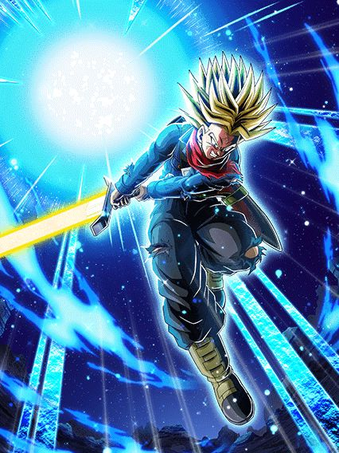
Cozinharam algo meio errado aq.
Bom, pra começar, a celebração sobre o futuro e conexão em volta do trunks, só foi ter um card dele na parte 2 💀
Agora, sobre o card em si, é legal mencionar que foi esperado um card do trunks com a espada da esperança desde sei lá, 2019, e tmb q esse card tem as 3 OSTs extremamente diferenciadas do comum do dokkan, até a guitarra q eles sempre usam tá diferente
Isso me faz pensar q ou eles tão tentando dar diferença ou chamaram o compositor do legends pra ajudar na celebração, oq não é uma coisa ruim já q o legends tem poucas osts apesar de serem muto boas.
Agora falando sobre o kit, o Trunks é mais um card que (adivinha) stacka DEF no super apesar de defesa bruta não ser o suficiente.
Ok ok, o trunks tem mais q só isso, oq ajuda mas.. nem tanto
O trunks stacka apenas no ultra super attack, oq significa q ele stacka mais devagar q os Z boys por exemplo, mas ele tem a seguinte mecânica de ganhar 10% de redução de dano no turno por super feito, e isso é uma das piores mecânicas q poderiam colocar num card.
Não seria tão horrível quanto o vegeta blue evolution lr, mas fica quase no mesmo nível pelo fato de q o trunks não tem nenhum super adicicional garantido no kit, só um monte de adicionais com chance de serem supers (e vista a experiência com os GT boys, cê já sabe oq acontece)
É honestamente deprimente ver o trunks dar um super de 11 milhões, dar 2 adicionais normais e morrer pra um super, sabe, era pra ele ser o protagonista da celebração...
Bom, caso ele dê os adicionais, ele é bom sim, ele stacka bastante DEF já q ele é mais devagar e o dano é muito absurdo, principalmente se vc encher o buchinho dele de crítico no hidden potential.
Oq o trunks tem tmb (além das animações muito feias), é uma standby a partir do turno 5 q é mei estranha mas boa
Tal standby pai, tal standby filho.
O trunks vira uma standby dos Z boys ver.0.5 já q em cima da defesa q vc stackou vc ganha 50% de redução de dano e defesa ativa no slot 1, oq torna o trunks uma parede
E finalmente, esse trunks é o segundo standby q pode atacar, oq seria muito legal se não fosse ele ainda ter 2 supers travados por uma chance de 70% (pelo menos na standby ele tem 1 garantido com 5 orbs) e que a standby é algo q atrapalha.
A standby do trunks dura só 4 turnos ao invés de 5 e é carregada com ataques feitos por aliados no time, e apesar de ele ser um tank, o ATK dele continua similar, se não maior q o normal, e se vc analisou, já entendeu o problema.
Imagine q vc está enfrentando um boss muito difícil e precisa usar a standby pra sobreviver e ir pra próxima fase, mas o boss tá na última barra de vida
Oq vc acha q vai acontecer?
É, ele vai mandar um super de 14 milhões e matar o boss, dando um total de 1 carga pra standby e vc vai ser obrigado a usar ela quando o trunks voltar pq vc não pode carregar por outro turno
Entende pq isso dá um certo conflito? O trunks é forte demais pra carregar a própria standby
Claro, a standby é muito forte pq vc está com os stats bem altos e cada carga é 50% de ATK a mais oq é bastante coisa, mas ainda sim, o máximo q vc pode estender a standby é 4 turnos, e isso só acontece se vc deixar o trunks no slot 3 pra ele demorar mais pra voltar, oq não é algo q vc vai poder fazer já q vai ficar sem um slot 1 na rotação.
E pra complementar, essa standby tem sérias falhas, já q ela não muda as animações totalmente, só a lâmina da espada do trunks q fica azul ao invés de amarelo e a finalização é um dos ataques mais brocha do jogo, sem efeitos e com um final anticlimatico, além de não ter uma tela de K.O
Em resumo, o trunks tem muitas coisas boas, mas tmb muitas falhas, e fica difícil só ignorar essas falhas pq pô, é um LR carnival q era pra ser o principal da celebração, kd a consideração?
Pelo menos o banner dele é muito bom..
GOHAN DO FUTURO LR
Esse cara aqui tá com zap tmb.
Bom vamo lá, o gohan é um card muito bom, mas não dá pra simplesmente deixar passar que ele não deveria estar nessa celebração pelo simples motivo de precisarmos muito de buffs pra extreme class e um goku black LR carnival no lugar do gohan ajudaria demais o zamasu. Mas não aconteceu, então faz o L mesmo.
Sobre o gohan, ele faz o que o zamasu faz, só que melhor, já q ele tem 80% de redução de dano, mas ela dura por 5 turnos ao invés de 1 só
Isso é muito bom mas não significa q ele é 100% imortal já que um pedaço dessa redução aí só ativa depois que ele der super, oq tmb ajuda já q ele aumenta muito ATK e DEF nos supers e builda atacando tmb.
E o gohan se resume a isso basicamente, ele só é um tank confiável que dá bastante dano
Agora vem a real parte bizarra q é o gohan ter um domínio.
Não reclamando do efeito do domínio pq esse é muito bom (literalmente o domínio do zamasu mas invertido), mas sim do simples fato do gohan criar um domínio do nada, ele não tem uma active ou standby q faz isso ou algo assim, ele literalmente cria o local onde ele morre no OVA a partir do turno 5 sem nenhuma condição, é só muito estranho e esteticamente feio por do nada o domínio ativar e é isso 💀
Sobre o domínio dele, é um domínio brabo
O gohan agora muda orbs pra str pq, pq não né? E tmb dá crítico garantido com 24 de ki, oq é bem brabo já q agr extreme class recebe 30% de dano a mais.
E vamo lá, pra finalizar tudo, tenho q falar sobre o visual desse gohan, já que além das animações dokkan original lindas nele, ele tem uma ost de intro muito boa e a active dele, q aumenta a defesa em 20% pra sempre, tem simplesmente A animação
E não, eu não irei elaborar mais nada, vc vai ter q ver por si mesmo.
Até que enfim, o gohan do futuro com o final bom.
Eza do gohan do futuro teq
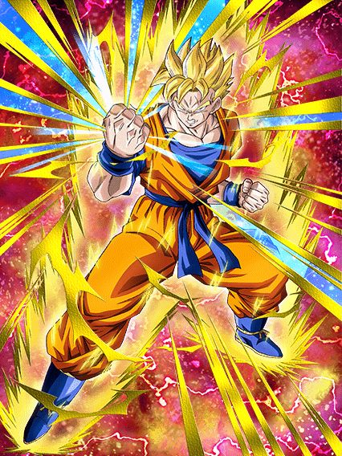
Dar dano.
O gohan tem um dos kits mais básicos q existe, ele só dá dano
Ele stacka 100% de ATK por super oq é bem absurdo, e o kit dele é exatamente isso:
158% de ATK e DEF
Outros 158% por 5 turnos pq sim
Outros 158% quando tá abaixo de 85% de HP
Mais 58% quando HP tiver abaixo de 58%
Ele não tem uma defesa boa, oq faz vc perder vida fácil e pegar mais buffs, e assim dar mais dano enquanto stacka mais, como eu disse, é um personagem q dá dano
Ele tem sim 50% de chance de desvio e 30% de chance de adicional, mas apenas contra um inimigo androids ou future saga, oq é bem restrito mas tá ali né
Eza do Trunks STR
Quando vc estiver com 10 de vida a gente conversa.
Eu só queria deixar claro que esse é um dos piores momentos "dokkan não sabendo nomear os personagens", tipo, olha a arte desse personagem, ele realmente parece estar no mesmo ssj que sei lá, o goten?
Enfim, esse trunks é um card interessante, só que ele te obriga a ficar com pouca vida
Metade da passiva dele é baseada em HP, e quanto mais baixo, maior é o buff nele, e isso é complicado pois normalmente pra tankar os maiores supers é bom estar com a vida cheia, mas com a vida cheia o trunks simplesmente perde 180% de ATK e DEF, e mesmo que ele tenha 40% de redução de dano sem restrição, não vai adiantar se ele tiver 147k de defesa 💀
Coisas extras q valem mencionar é ele aumentar 40% de DEF no super por 6 turnos, q é bem incomum e junta com um adicional garantido caso ele esteja contra um realm of gods, oq é difícil mas tá ali tmb né
Caso ele dê 6 ataques na luta a redução de dano aumenta pra 50%, mas ainda sim, você não quer manter esse card em rotação principal pq vai dar conflito com outros, pq ele sem vida é extremamente tank e dá muito dano rapidão, mas não dá pra dizer isso de todo o resto do time.
EZA do Zamasu INT
Quando os 20% de redução fazem diferença:
No momento em q anunciaram o eza desse cara eu já fiquei hypado, pq buffs pro zamasu LR né
Enfim, o zamasu tem um kit meio contrário e mais funcional q do trunks, já que ele ganha mais buffs quando tá com a vida no máximo ao invés de baixa, q é muito mais fácil de fazer quando se considera q o time do zamasu tem uns 3 personagens q curam vida
Ele tem 40% de redução de dano sem restrições igual ao trunks, mas a diferença aqui é q o zamasu ganha mais 20% de redução caso todos os aliados na rotação sejam realm of gods, oq é muito fácil já q o time do zamasu normalmente só tem realm of gods mesmo
O zamasu não é um card de dar dano nem nada, mas ele funciona bem de floater mantendo uns links maneiros com os cards e tankando muito bem com a passiva completa (os 20% a mais realmente dão diferença, acredite)
Uma parte meio inútil do kit dele é ele lançar um adicional de 70% de ser super depois de tomar 6 ataques
Acho q no tempo q eu joguei com ele (q é considerável), eu nunca vi isso ativar, até pq meu zamasu tem full desvio.
EZA do Trunks e Mai AGL
3 restrições pra ter um card bom 💀
Eu gosto deles, uma pena q são muito restritos, mas pelo menos são bons
Basicamente o trunks e mai precisam de um aliado ssj blue pra ter 150% de ATK e DEF, q não é extremamente específico se eles também não precisassem de todos os aliados no turno serem future saga pra terem 30% de redução de dano
E não acaba aí, já que eles ganham mais 100% de ATK e DEF mas só se o inimigo for future saga tmb
E pra completar o pacote eles ganham mais 150% de ATK e critam garantido caso o inimigo seja o goku black ou o zamasu, e finalmente acabam as restrições
Em resumo, caso vc esteja em todas as condições citadas acima, vc vai ter um card muito bom, com uma defesa incrível e um dano maneiro, caso contrário vc vai ter alguma coisa ai
Falar rapidão que eles tem uma ativa quase suicida, já que eles dão um dano do caramba mas perdem metade da defesa 💀
EZA do Trunks INT F2P
Eu defendo esse card até o fim dos tempos.
Card f2p lindo maravilhoso, com a mecânica de domínio, e que de fato é decente
Ele builda ATK e DEF atacando 5 vezes, e ganha 100% de ATK e DEF quando os aliados forem future saga, e tmb tem uma 50% de chance de critar contra um inimigo future saga ou time travelers
E o kit dele é só isso.
O trunks não tem um kit de 76 linhas, ele é simples e direto, e não ironicamente decente se vc buildar ele com desvio
E ele tem o domínio, mas o negócio do domínio é q ele é só 10% de ATK e DEF pra aliados e inimigos future saga, mas nossa, a animação é tão legal e a ost é tão boa de escutar q coloca esse card num tier muito alto pra mim, simplesmente incrível
eza do trunks str f2p
50% de chance de defesa ativa (final ruim)
Esse trunks seria até interessante se os stats dele não fossem baixos demais, pq ele tem bastante porcentagens maneiras na passiva e até suporte, mas o final do kit dele me quebra
Ele simplesmente ganha 150% de DEF depois do turno 8.
E pra complementar ele tem 50% de chance de defesa ativa mas só se pelo menos 4 cards no time forem entrusted will, oq é absurdamente ridículo e torna o card defensivamente podre
Eu realmente não sei oq ocorreu, pq esse cara tinha uma base muito boa pra ser um ótimo eza..
…o "eza" do goku black int 💀💀
…
Tava tudo bem, até que isso aconteceu
Esse não é um momento "oq fizeram com meu garoto?", é só um momento triste, de chorar mesmo
Só.. oq aconteceu? Sabe, os ezas na celebração estavam muito decentes e do nada, resolveram q isso tava bom? Não faz sentido nenhum.
Bom, o goku black stacka 50% de DEF por super oq é legal e tals mas, ele pode lançar 2 adicionais só contra um personagem super class, e é bem óbvio não são supers garantidos, ou seja vc pode ter o lendário turno de 1 super e 3 ataques básicos 💀
E no geral é só isso, ele builda crítico tomando golpes (?????????) e cabou o kit na base
Eu não preciso nem dizer que isso é ridículo pra um EZA de 2023, especialmente de um dokkan fest tão aguardado, é simplesmente triste e não faz sentido fazerem algo tão horrível sendo q o zamasu precisa de qualquer buff q ele puder ter, e não, o goku black não fica melhor contra um dos poucos boss super class do jogo, na vdd ele continua morrendo pros auto attack mesmo
Pelo menos a condição de transformação dele é melhor agr, acima de 60% de HP depois do turno 4..
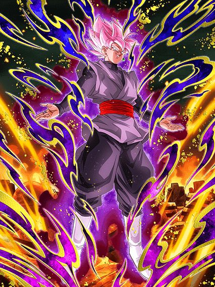
Se vc acha q ele fica melhor agora, não fica.
Ele mantém o stack, tem um valor de ATK decente e 50% de crítico, oq é bem mais interessante, mas..
Eles separaram os adicionais dele pra ainda ter 1 apenas contra super class e o outro não precisa mais, só que são só chances de novo, sabe, fica difícil levar isso a sério
Ele também tem um suporte de 30% de ATK e 3 de Ki meio nada haver mas disso eu não reclamo não
E o kit dele já acabou de novo 💀
Acho que ficou bem óbvio que o goku black é simplesmente horrível e não é usável em nenhum conteúdo difícil, já que ele não tem defesa ativa, redução de dano e o stack dele se torna extremamente devagar já que todos os adicionais dele são só chances de serem supers, ele morre pra qualquer coisa no jogo, contra um super class ou não, infelizmente não importa.
O EZA DO GOKU BLACK LR
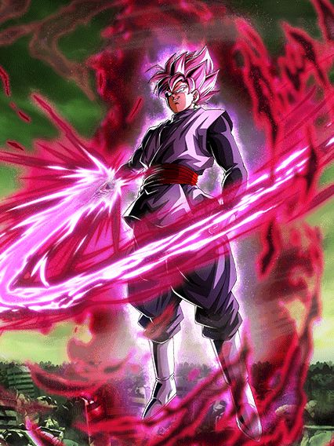
AAAAAALLLLLRIGHT GUYS
ISSO AQUI É UM EZA DE RESPEITO MLK
No segundo em q o evento de eza desse cara apareceu nos arquivos do jogo, todo mundo já tinha perdido a esperança de ele ser bom depois do fiasco do goku black int, mas felizmente ocorreu tudo bem.
Daria pra dizer que o goku black é a representação viva do slot 2, pq é ali q ele deve ficar, sempre
Ele já tinha bastante potencial pq desde sempre ele ganhava 50% de DEF em ambos supers, oq já ajudava mesmo q antes do eza ele beirava 200k de DEF 💀
Mas em resumo, o goku black precisa de Ki, exatamente, isto, bastante Ki
Metade da passiva dele é um buff multiplicativo insano baseado no Ki dele, ou seja, pré super ele é um papel e pós super uma parede.
E falando de Ki, ele agora ganha 3 de Ki quando o estiver acima de 18 no turno, oq ajuda demais, e ainda lança um lindíssimo super adicional garantido caso o ki esteja acima de 22, e eu já vou falar que buffs multiplicativos + 2 buffs de 50% de DEF irão resultar em uma cozinha.
Ele tmb recupera vida no final de cada turno mas isso é bem irrelevante na vdd, o foco aqui é o ki, que talvez seja um problema
Depende um pouco da RNG dos seus orbs mas as vezes pode sim ser difícil pegar o adicional garantido com o goku black, oq é triste, mas aí entra o… final blow.
Bom, pessoalmente acho que toda comunidade odeia essa mecânica de golpe final, mas como o goku black pode dar um super de 18 milhões, seguido de um adicional de 11 milhões e outro de 12, fica mais fácil doq parece pegar o golpe final numa partida, e por sinal esse golpe final te dá 6 de ki, retirando o problema de ki já mencionado e tmb 50% de chance de crítico de graça, simplesmente pq sim
E isso resume o kit dele, pq ele é só isso, ele dá muito dano mas ao contrário de muitos outros cards, pós supers ele tá facilmente acima de 1 milhão de DEF, oq torna ele imortal contra quase todo evento no jogo
Mas ele tem uma cereja no bolo, um rage mode
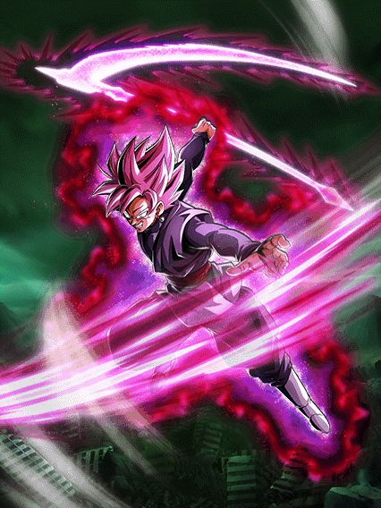
Eu odeio as condições disso, mas é muito linda.
Mas meu amigo, estar abaixo de 66% de HP depois do turno 6 é muito tempo, maioria das lutas vai ter acabado jákkkk
Enfim, rage mode clássico onde impede o boss de dar AOEs ou supers, e dá um daninho maneiro já q ele fica efetivo contra tudo até o rage acabar, e pega ki bem fácil tmb
No geral, era basicamente isso, e é muito engraçado o goku black não ter redução de dano ou desvio ou sei lá, mas ainda ser muito bom mesmo com só defesa bruta
Muita gente tava com opiniões distantes sobre ele no lançamento, mas todos chegaram a conclusão de q ele é ótimo e um eza perfeito pro time do zamasu, e eu concordo!
Obrigado akatsuki por não decidir qual eza é bom e qual não é, eu acho…
Você chegou ao fim dessa página!
Obrigado por ler tudo, e fica a vontade pra ver outras

")


")
")


")
")
")
")
")

 & Mai (Future)")
")
")